In remembrance
Two Heberts,
Remembered
Two American soldiers named Hebert. One fell in the bitter winter of Korea, 1950. The other fell in Vietnam at twenty, in January 1967. Their names are carved on the memorials of the National Mall.
A short documentary
The Film
Two Heberts, Remembered: a quiet telling of two lives, two wars, and one surname carried from Acadia to the American memorials.
Opening
Names in stone
A visitor photographed both names in Washington, DC. This page gathers what public records can honestly say about each man: warmly told, carefully sourced, and clear about what remains unknown.
Hebert is among the oldest and most widespread Acadian surnames in North America. That shared origin is sketched at the end. No claim is made here that either man is related to any living person who reads this page.
Korean War Veterans Memorial · Wall of Remembrance
Robert J. Hebert
On the gray granite of the Wall of Remembrance, ROBERT J HEBERT is carved in the alphabetical run of names, between ROBERT R HEATON and HENRY A HECHT. The wall, dedicated in 2022, lists more than 36,000 Americans who died in the Korean War.
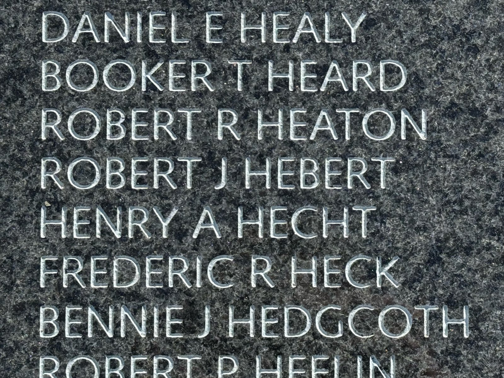
The man behind that engraving is Sergeant Robert J. Hebert of the United States Army. Official casualty files place his home of record in Vermilion Parish, Louisiana, Cajun country on the Gulf prairie, and record that he was born in 1930. He was killed in action on 4 December 1950. His remains were recovered.
December 1950 was among the hardest months of the war. Chinese forces had struck United Nations lines in late November. Fighting in bitter cold around the Chosin Reservoir and the east-coast port of Hungnam cost thousands of American lives. Secondary memorial compilations place Sergeant Hebert with the 15th Infantry Regiment of the 3rd Infantry Division, a light-weapons infantry soldier, and associate his death with that Chosin campaign period. The National Archives state list confirms the date, parish, rank, and recovery of remains, but does not itself print his regiment.
The Korean War Veterans Memorial Foundation database lists him on Panel 70 of the Wall of Remembrance, as an Army sergeant. Louisiana honor rolls and parish casualty lists repeat the same core facts.
US Army, public domain
-
1930BornYear only in the National Archives extract. Day and month not found.
-
Home of recordVermilion Parish, LouisianaTown within the parish not named in the NARA extract.
-
ServiceUnited States Army · SergeantUnit reported secondarily as 15th Infantry, 3rd Infantry Division.
-
4 December 1950Killed in action, KoreaRemains recovered. Associated by secondary sources with the Chosin / Hungnam campaign period.
-
Wall of RemembrancePanel 70Korean War Veterans Memorial, Washington, DC.
From home to the fight
A symbolic line only. Not a record of his embarkation route.
Facts
- Full name on wall
- ROBERT J HEBERT
- Branch
- United States Army
- Rank
- Sergeant (SGT)
- Service number
- 18278513 (Honor States; treat as secondary)
- Specialty
- Light Weapons Assault Infantryman (Honor States; secondary)
- Unit (secondary)
- 15th Infantry Regiment, 3rd Infantry Division (Honor States)
- Home of record
- Vermilion Parish, Louisiana (city within the parish not listed in NARA extract)
- Birth
- 1930 (year only in NARA DCAS extract; exact day and month not found)
- Date of death
- 4 December 1950
- Circumstances
- Killed in action (KIA). Associated by secondary sources with the Battle of Chosin Reservoir / Hungnam campaign period in North Korea.
- Remains
- Recovered (NARA: Remains Recovered = Y)
- Wall of Remembrance
- Panel 70 (Korean War Veterans Memorial Foundation name search)
- Awards
- Purple Heart and Combat Infantryman Badge are consistent with KIA infantry service; Honor States also lists service and campaign medals, noting some awards may be inferred.
- Burial
- Not located in public searches of Find a Grave / ABMC for this casualty; remains recovered but cemetery not confirmed here.
- Family
- Parents, spouse, and children not identified in sources opened for this research.
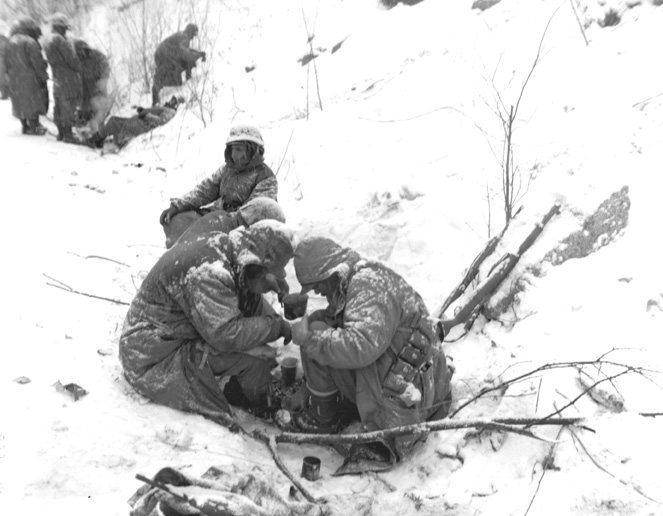
Which Robert Hebert is on the wall?
More than one Hebert died in the Korean War. The wall engraving ROBERT J HEBERT matches the Louisiana Army sergeant. Capt. Robert Richard Hebert of the Air Force (San Bernardino, California; lost with a B-29 on 30-31 January 1952; remains not recovered) appears in foundation records as ROBERT R HEBERT on a different panel, not the J initial photographed here.
| Name on records | Branch | Home | Date | Panel | Notes |
|---|---|---|---|---|---|
| Robert J Hebert | Army SGT | Vermilion Parish, LA | 4 Dec 1950 | 70 | Matches the photographed engraving |
| Robert R (Richard) Hebert | Air Force CAPT | San Bernardino, CA | 31 Jan 1952 | 100 | Different middle initial; MIA / non-recoverable |
| Charles K Hebert | Army 1LT/2LT | Monmouth Co., NJ | 28 Nov 1950 | 82 | Other Hebert on the wall |
| Sylvio L Hebert | Army PVT | Androscoggin Co., ME | 12 Feb 1951 | 33 | Other Hebert on the wall |
In the visitor's photograph, the name just below the frame edge reads ROBERT P HEFFLIN (also spelled Heflin in NARA files), Corporal Robert P. Heflin of Knox County, Illinois, died 14 July 1953, remains not recovered. That is a different surname, not another Hebert.
Vietnam Veterans Memorial · The Wall
Yvon Andre Hebert
Yvon Andre Hebert grew up in the far north of New England, Stratford, in Coos County, New Hampshire, in a French-Canadian family that had crossed from Quebec after the Second World War. Friends and neighbors still remembered his parents, Tony and Lucy, decades later: a living-room portrait of Yvon lit in the house, jelly-sugar cookies after school, and a mother's tears when she spoke of him.
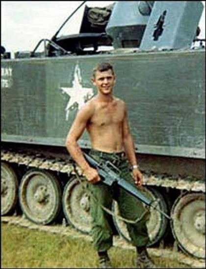
He was born 2 October 1946. In Vietnam he served as a corporal in the Army with the Reconnaissance Platoon of Headquarters Company, 2nd Battalion, 22nd Infantry, the Triple Deuce, then part of the 4th Infantry Division's 3rd Brigade. His specialty was armor intelligence / armored reconnaissance: the scouts who went forward to find the enemy and bring word back. His unit had trained at Fort Lewis, Washington, and arrived in Vietnam in late 1966; its first permanent base was near Dau Tieng.
On 17 January 1967, in Binh Duong Province, South Vietnam, Yvon was killed by an explosive device while on the ground. Records describe the casualty as hostile, died while missing, other explosive device, ground casualty, with remains recovered. He was twenty years old (the tribute left at The Wall says he was twenty-one in 1967, counting the year he would have turned twenty-one). He received a posthumous promotion to corporal. His name is on Panel 14E, Line 44 of the Vietnam Veterans Memorial.
He is buried at Saint Stanislaus Cemetery in Bloomfield, Essex County, Vermont, just across the Connecticut River from the New Hampshire towns his family knew, plot 73a, beside his parents. The stone, as transcribed on Find a Grave, reads in part: New Hampshire · Cpl · HHC 22 Inf · Vietnam, and notes two Purple Hearts.
US Army, public domain
US Army, public domain
-
2 October 1946BornStratford / Coos County, New Hampshire home of record.
-
FamilySon of Tony and Lucy HebertAntonio C. Hebert (1912-2004) and Lucienne M. Tremblay Hebert (1913-1997), from Quebec to the Vermont-New Hampshire border after 1947.
-
1966Arrives in VietnamRecon Platoon, HHC, 2/22 Infantry, 4th Infantry Division. Trained at Fort Lewis.
-
17 January 1967Killed in Binh Duong ProvinceHostile explosive device, ground casualty. Remains recovered. Age 20.
-
The WallPanel 14E, Line 44Buried at Saint Stanislaus, Bloomfield, Vermont, with his parents.
From home to the fight
A symbolic line only. Not a record of his embarkation route.
Facts
- Full name
- Yvon Andre Hebert
- Wall name
- YVON A HEBERT
- Branch
- United States Army
- Rank
- Corporal (CPL); posthumous promotion from PFC per Find a Grave biography
- Service ID
- 51546480 (Honor States / VVMF ecosystem)
- MOS / specialty
- Armor Intelligence Specialist / Armor Reconnaissance Specialist (Vietnam-era MOS 11D family)
- Unit
- Reconnaissance Platoon, HHC, 2nd Battalion, 22nd Infantry, 3rd Brigade, 4th Infantry Division (USARV)
- Home of record
- Stratford, Coos County, New Hampshire
- Birth
- 2 October 1946
- Casualty date
- 17 January 1967
- Province
- Binh Duong, South Vietnam
- Circumstances
- Hostile; died of wounds from an explosive device (ground casualty). Remains recovered.
- The Wall
- Panel 14E, Line 44
- Burial
- Saint Stanislaus Cemetery (also called Catholic Cemetery), Bloomfield, Essex County, Vermont; Plot 73a
- Awards
- Purple Heart (Find a Grave / remembrances note a second award, oak leaf cluster / 2PH on the stone). Combat Infantryman Badge and Vietnam service/campaign medals listed on Honor States (some may be standard entitlements).
- Parents
- Antonio C. Tony Hebert (1912-2004) and Lucienne M. Lucy (Tremblay) Hebert (1913-1997)
- Siblings
- From father's 2004 obituary: Angela Hebert St. Cyr (Berlin, NH); Monique Hebert Washburn (Colebrook, NH); Claude J. Hebert (Grand Haven, MI)
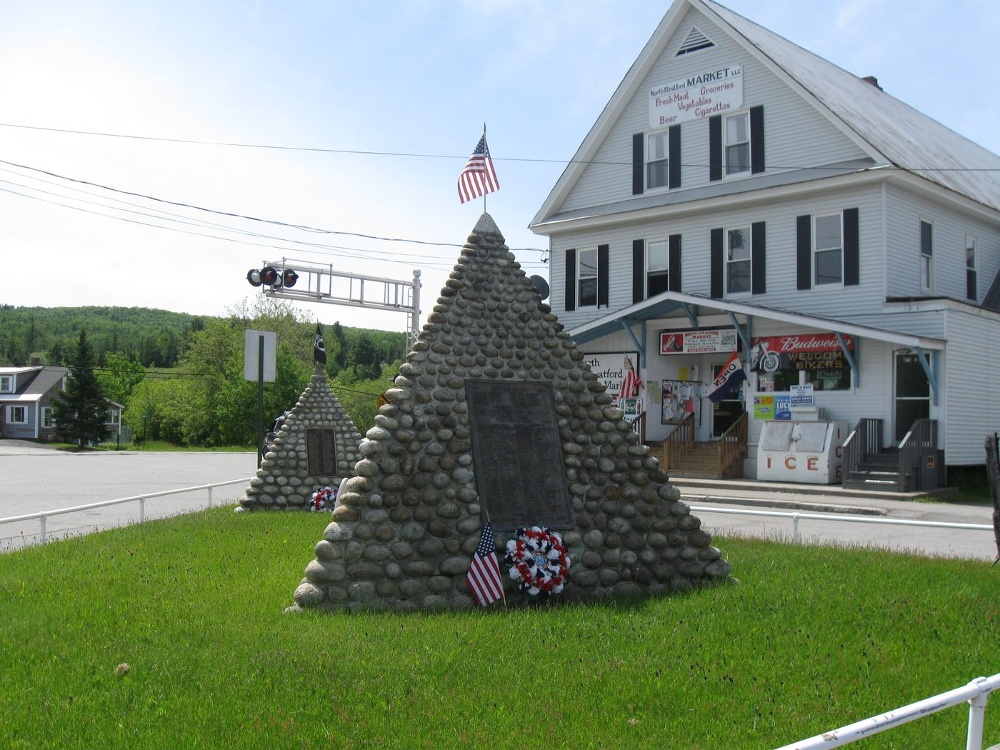
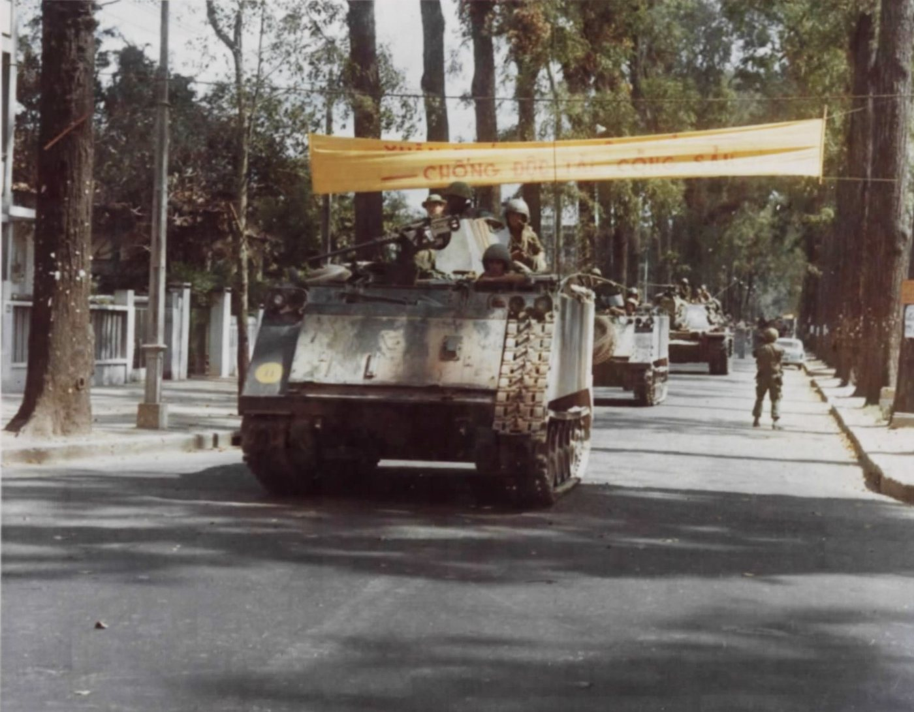
A tribute left at The Wall
RESPECTED
At the base of The Wall, a parchment-colored poster with a yellow border was left in Yvon's honor. It carries his name, two photographs of him, and an acrostic poem whose first letters spell RESPECTED. The maker is not named on the poster; the handwritten style and classroom-style acrostic strongly suggest a student remembrance project, common at the memorial, but the author has not been identified.
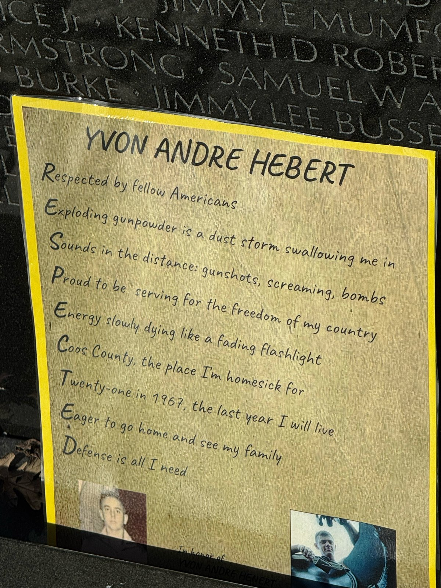
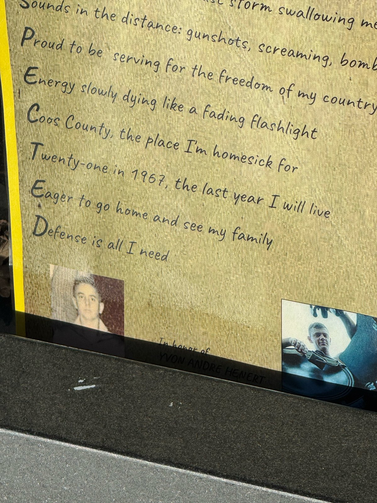
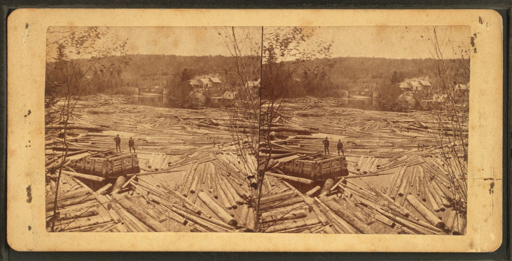
Family and remembrances
Tony Hebert was born 9 February 1912 in St. Edwidge, Quebec, one of ten children of Jean Baptiste and Aglee (Martineau) Hebert. He married Lucienne Tremblay about 14 January 1933 in Ste-Edwige, Compton County, Quebec. The family settled in Bloomfield, Vermont, in February 1947. Tony worked trucking, at a plywood plant in North Stratford, as steward of the Stratford VFW Post, at the Bloomfield Hotel, and for twenty-one years with the New Hampshire Department of Transportation. Lucy died in 1997; Tony in 2004. Both rest at Saint Stanislaus with their son.
On the Virtual Wall of Faces, remembrances keep his name warm: a family friend who knew Tony and Lucy's kitchen; a man named Michael Yvon Rich, named partly for Yvon, who wrote that all his children and grandchildren carry a Y in their names for him; veterans who thank him for reconnaissance service.
One surname · many roads
Shared Acadian Hebert roots
Hebert is one of the great Acadian family names. The Acadian line begins with two brothers, Antoine and Etienne Hebert, who arrived at Port-Royal (in today's Nova Scotia) around the 1640s. Antoine, a cooper, married Genevieve Lefranc; Etienne, a farmer, married Marie Gaudet. Their children and grandchildren spread through Port-Royal, the Minas Basin, and Beaubassin.
The British expulsion of the Acadians, Le Grand Derangement, beginning in 1755, scattered the family. Some Heberts reached Louisiana in the 1760s and again with the 1785 Seven Ships from France, settling the Acadian Coast, Attakapas/Opelousas, and Bayou Lafourche. Those Louisiana lines became part of Cajun country, including Vermilion Parish, Robert J. Hebert's home of record.
Other Heberts remained in or returned to Canada, or later migrated from Quebec to New England mill and timber towns. Coos County and Berlin, New Hampshire, drew large French-Canadian communities for pulp, paper, and woods work. Yvon's father Tony was born in St. Edwidge, Quebec, and brought that French-Canadian Hebert line to the Vermont-New Hampshire border country after 1947.
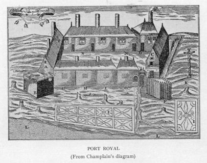
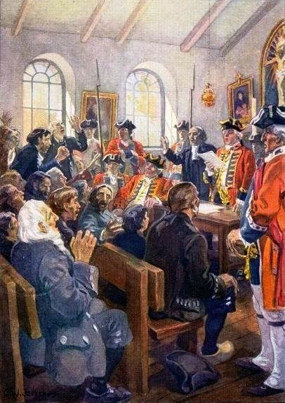
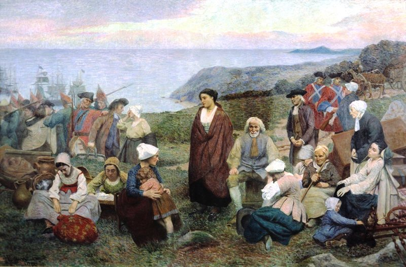
Honest limits of the record
What we could not confirm
- Unconfirmed
Robert: exact birth date
NARA gives birth year 1930 only. Day and month not found in sources opened here.
- Unconfirmed
Robert: town within Vermilion Parish
Parish is known; Abbeville, Kaplan, Gueydan, or another town is not named in the NARA extract.
- Secondary only
Robert: regiment in a primary file
15th Infantry / 3rd Infantry Division comes from Honor States (secondary). Not verified against a NARA unit field in this research pass.
- Not found
Robert: burial place
Remains recovered, but cemetery and headstone not located in Find a Grave / ABMC searches run for this page.
- Not found
Robert: parents and next of kin
No newspaper obituary or family file opened successfully for this research.
- Not found
Robert: photograph
No service portrait located on DPAA, Honor States, or Korean War Project pages opened here.
- Partial
Yvon: exact tactical incident
Explosive-device death in Binh Duong on 17 Jan 1967 is documented; a named battle or after-action report for that specific contact was not found.
- Unknown
Yvon: tribute poster author
Likely a student project; no name, school, or program identified on the poster or in searches.
- Not claimed
Kinship between the two men
Shared Acadian surname origin is historical fact; a documented family connection between these two individuals is not established.
Documentation
Sources
Core facts for both men rest on National Archives Defense Casualty Analysis System extracts (state alphabetical PDFs). Memorial placement for Robert is confirmed by the visitor's photograph and the Korean War Veterans Memorial Foundation name search. Yvon's wall panel, unit, and death details are corroborated across NARA, VVMF Wall of Faces, The Virtual Wall, Honor States, and Find a Grave.
Image credits
- Visitor photos of ROBERT J HEBERT's wall engraving and Yvon's tribute poster: photographed by a visitor at the memorials in Washington, DC.
- Yvon field photographs: shared for remembrance on the VVMF Wall of Faces and The Virtual Wall.
- Vietnam Wall and Korean War statues / Wall of Remembrance: National Park Service, public domain (Wikimedia Commons).
- Korean War Wall of Remembrance landscape: Wikimedia Commons, CC BY-SA 4.0.
- 3rd Infantry Division SSI, 4th Infantry Division SSI, 22nd Infantry Regiment DUI: US Army, public domain.
- Chosin Reservoir, December 1950: US Marine Corps, public domain.
- M113 APCs in Saigon: US Army, public domain.
- Abbeville, Louisiana commercial district: public domain via Wikimedia Commons.
- North Stratford, New Hampshire: Wikimedia Commons, CC BY 3.0.
- Bloomfield, Vermont mill pond: A. J. Whittemore, public domain.
- Port-Royal c.1612; Acadian deportation paintings (Jefferys; Henri Beau): public domain.
- Folded flag at a military funeral: US military, public domain.
- Full file-by-file list: see IMAGE-CREDITS.md in this repository.
Compiled for remembrance. Corrections from primary documents are welcome; inventing missing details is not.